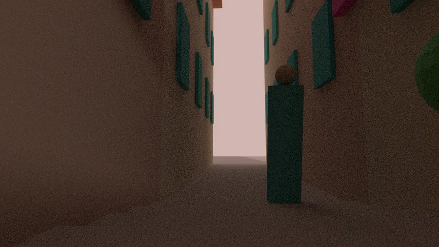
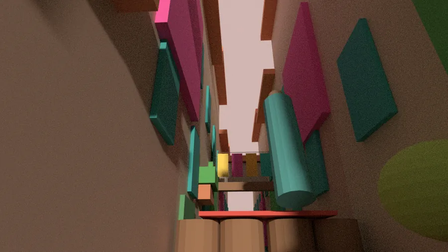
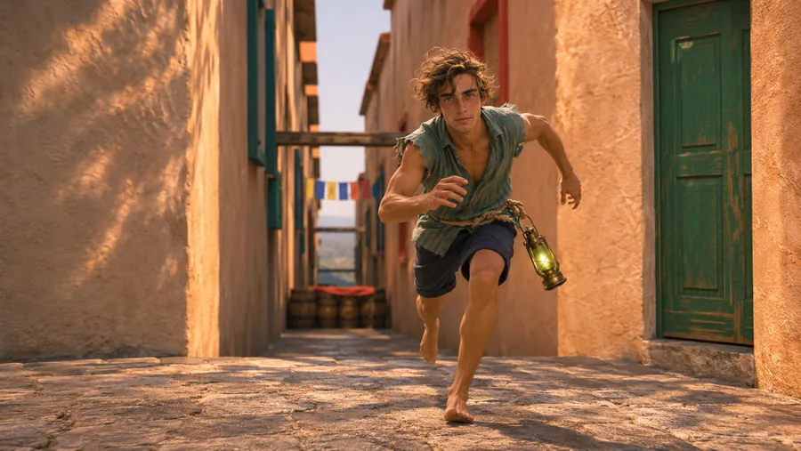
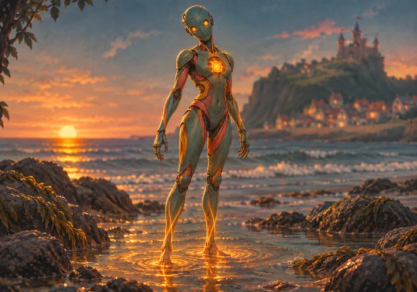

Concept and look development
Painterly key art is the style master; the photoreal canon is the reference for AAA materials, faces and light.
- Builds
- Lumen
- Judges
- Iris
- Standard
- S2 character sheets
- Next
- E1 Turnaround, head and hand sheets
An AI-assisted workflow engine for making a game with the output of a 10 to 20 person studio. One creative director, a team of named AI agents, and a nightly build he plays every morning.

Kindling is game-agnostic: it holds the rules, the agents, the pipeline, budgets and judges. The first game built on it is Kindling Discovery, whose lore and assets live in their own repo.
Every choice is optimised for those two morning scores, per dollar and per hour of Steven's attention.
Each step starts when the previous one's evidence passes.
Every area of making the game, who builds it, who judges it, where it stands, and its next experiment. The target is AAA PBR characters and environments that Unity scales down to mobile.
Painterly key art is the style master; the photoreal canon is the reference for AAA materials, faces and light.
Canon plates, posters and 4K close-ups exist for all four characters. No game mesh yet; the first mesh test is under way.
A Rigify game skeleton from the stylised phase. AAA needs rig v2: twist and finger bones, jaw and eye bones, 52 face shapes, and head landmarks.
Hand-keying with a judge loop was a dead end. The route now is prompted video and capture, retargeted onto the standard rig.
Signature props per location are proposed. Grid kits come from procedural modules; loose props from prop sheets through image-to-3D.
The Episode 01 beach was blocked out from a hand sketch. The map is 8 by 8 km, with the first 1 km opened first, in streamed 256 m cells.
A look layer exists from the stylised phase. AAA needs physical light units, calibrated exposure and grade, and GI and reflection probes per cell.
Controller, parkour gym and playthrough bot exist. Reach and step heights get re-measured on rig v2.
Episode 01 outline and a facts file with milestones and secrets. Dialogue is scripted ahead and voiced as pre-generated audio.
Blender clay and depth guides drive approved photoreal keyframes. The video step is still to test.
Budgets per tier proposed: 80k, 40k and 15k triangles per hero. One source asset, scaled by Unity to medium and mobile.
Parked. Planned once the first tile plays.
Steps 1 to 9 done. Next: the gate path fix (task 58) and the fresh dashboard (task 59).
Eight small experiments, each with a done test and a spend cap Steven approves. Free tiers first.
Lumen; judged by Gait, Pivot
Steven is generating the hero's sheets in the free image app.
Done when: An orthographic A-pose sheet, a head sheet and a hand sheet that Gait and Pivot accept.
Clay; judged by Prism, Iris; after E1
Done when: One run each in 3 to 4 generators, scored on shape, face, hands, topology, UVs and cost.
Pivot; judged by Gait; after E2
The written standard can start now; fitting waits for E2.
Done when: The hero rigged through the test poses: no tearing, jaw opens, eyes turn in their sockets.
Prism, Kiln; judged by Iris
Done when: 5 sheets to standard and 5 props through the import gate with LODs.
Prism, Lumen; judged by Iris, Anvil; after E3
Done when: Skin, eyes, hair, cloth and brass; High beside the 4K close-up; Medium and Mobile frame times.
Flip, Pivot; judged by Gait; after E3
Done when: 52 face shapes pass blink, smile and talk; one run clip retargeted; Gait scores it.
Ridge, Prism; judged by Anvil, Gauge
Done when: A 1 km tile in 256 m cells streaming around a walking bot, with memory and hitches per tier.
Anvil; after E5, E7
Needs a test phone.
Done when: The Mobile tier at 30 fps for 10 minutes on a mid-range phone.
One month of building, from 25 October 2026. The honest list, including the parts that did not work.
Concept art, then a clean character plate, a photoreal intro, a realistic poster, and a 4K and HDR10 close-up. Done for Tomas, Ines, the Mayor and Tally.
Image generator edits with identity locks ("the same person", reference attached), then a local upscale: two Lanczos passes with sharpening, luminance clarity, grain, and a PQ encode to 10-bit AVIF. Main limit: generator sources are only about 840 by 1260 pixels.
Project roots, the Unity control plane, budget client, dashboard job runner, permission profiles, smoke-tested builds, the morning report, the reconciler and the work repo with a one-click merge.
Each step closed on a real end-to-end run with pasted evidence; reports live in reports/.
Every request is checked against the style guide and a facts file before any paid generation. Facts can be scoped to story milestones, and secrets fail closed until they are revealed.
A test request that leaked a story secret was refused. Spend went to well-formed prompts only.
The Episode 01 beach was laid out and blocked out from Steven's hand sketch, and judges graded the greybox against canon concept art.
Canon wins over sketches and briefs; every conflict is logged for Steven.
Steven talks to the chat integrator from his phone; tasks, specs and lore are committed and pushed; Claude Code pulls at session start.
Replaced the Google Drive folder on 25 November 2026.
Block the shot in Blender, render clay and depth guides, generate photoreal keyframes against the guides, then animate between keyframes with a video model.
Four keyframes for Tomas's alley swing were approved on 24 November. Still to try: the video step (Kling 4.0 with keyframes, Luma Ray3.2 as the comparison).
Image to 3D from the four-view plates in free tiers of Tripo, Meshy and Hunyuan3D, then auto-retopology and a humanoid rig.
Free tiers first; paid fallback capped at 1 US dollar.
Image to mesh to rig to video-guided, physics-limited clips, instead of hand-keying every move.
Part A needs no spend; Part B waits for Steven's budget approval.
An Animator agent hand-keyed clips in Blender and an Animation Director judged them on measured contact sheets, round after round.
After 33 rounds the score sat at 3 to 4 out of 10. Foot slip dropped from 26.6 to about 5 cm, but missing moves and new regressions held the score. Filmed reference retargeted with MediaPipe scored 3/10. Parked on 21 November.
A comic-ink style, then Paper-Riso cut paper, then a Paper-Ink blend were each accepted and later replaced.
The painterly key art replaced them as style master on 21 November, and the photoreal track grew from it. The Paper-Ink documents still need re-baselining.
Pushing the Mayor's master image toward the hero's key art lost what made him work.
His original key art stayed the master; only the backdrop changes.
Phrases like "same photograph", "same face", "no retouching", IMAX or robot names led to fraud or third-party content blocks.
Edits that say "Edit this image of the boy" and "the same person" work. Tally's poster stayed an upscale because the edit route stayed blocked.
A small local LLM with Kokoro voice at runtime.
Dialogue is now scripted ahead by the Narrative agent and voiced as pre-generated audio.
ComfyUI with a LoRA on a small open model.
The development GPU has 4 GB, so hosted generators come first until a workstation exists.
Shot 4 of Tomas's 30-second trailer: he sprints up a stepped alley, swings from a beam over a barrel barricade and runs out to the castle view, in one continuous 5-second shot.





Approved 24 November 2026. Next: feed the four keyframes to a keyframe-capable video model and compare two vendors, after checking their terms.
Each style was accepted for a while and then replaced, as the characters moved from flat illustration toward 3D and film.




Every craft has a short name, themed on fire and making. They are handles for roles, not people, and the same team builds both the engine and the game.
Every verdict starts with the judge's name, for example "Gait 4/10". Judges never approve gates; Steven does.